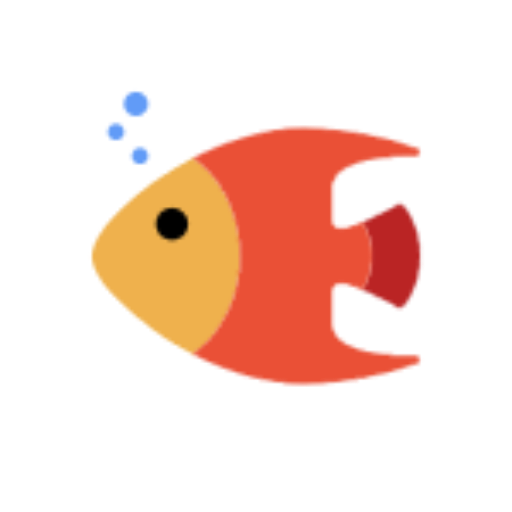

মৎস্য বাংলাদেশ
মাছ উৎপাদন বৃদ্ধি করি, সুখী সমৃদ্ধ দেশ গড়ি।
মাছের খাদ্য প্রয়োগের সূত্র
মাছের সংখ্যা:
গড় ওজন (গ্রাম):
খাদ্য হার (%):
নির্ণয় করুন
খাদ্যের পরিমাণ (কেজি):
মাছের মোট ওজন (কেজি):
তেলাপিয়া মাছের বাণিজ্যিক চাষ
,
পাঙ্গাস মাছের বাণিজ্যিক চাষ
,
কৈ,শিং ও মাগুর মাছের বাণিজ্যিক চাষ
,
আবদ্ধ পদ্ধতিতে চিংড়ি বানিজ্যিক চাষ